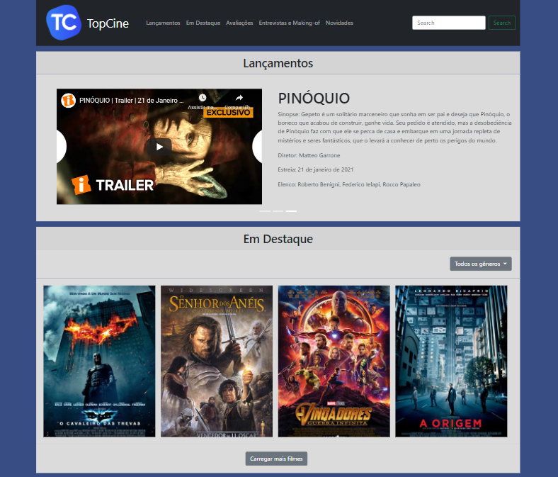
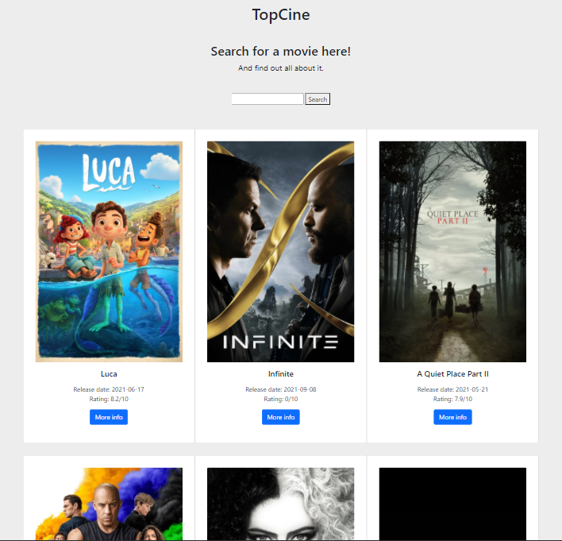

Com o objetivo de transformar o jogo pong
em um Jogo Legal, tive como inspiração o Mario para fazer um game divertido e
desafiador.
(Jogo desenvolvido em 30
horas)
https://scratch.mit.edu/projects/500879369
Jogo Multiplayer utilizando Scratch com a
finalidade de divulgar temas e personagens da área de Ciência da Computação visando aumentar
a curiosidade e o entendimento da área.
Site web
com o jogo incorporado e demais
informações:
https://flightfightawards.bss.design/
Link para meu currículo Lattes:
http://lattes.cnpq.br/4369835516261458
Este roteiro é capaz de ensinar para qualquer pessoa, leiga ou não em tecnologia, como começar seu aprendizado na programação de um Arduino na plataforma Tinkercad. O projeto foi desenvolvido por uma equipe de 3 alunos.
Link para Download
do
Roteiro:
https://drive.google.com/file/d/1Hhuzc9ixfhhPaSx22F5GYZuxmbS2vpyy/view?usp=sharing
Neste trabalho, montei um layout de
um site de Portal de Filmes inteiramente responsivo, que se adequa a qualquer tipo
de dispositivo e telas. O site é estático, contando apenas com sua tela
inicial, onde trás filmes em destaque, noticias do mundo do cinema, making-ofs e
entre outras coisas.
Prévia do site:

Portal de Filmes - Leandro Lourenço
- 2021 - CC PucMinas
Neste trabalho, demos vida ao layout
anterior com o uso da API do TheMovieDB, trazendo informações reais dos filmes mais
populares e uma ferramenta funcional de busca por filmes, alem do redirecionamento
para uma pagina sobre o filme selecionado.
Para acessar o Site, basta clicar
no Link
Abaixo:
https://leandro712.github.io/portalFilmesAPI/Trabalho%20filmes%20API/

Portal de filmes integrado
com API TMDB - Leandro - 2021 - CC PucMinas
Neste trabalho, criamos um canal no
Youtube com o propósito de ensinar e auxiliar as pessoas a utilizarem as plataformas
do Google Docs. Abaixo estou deixando o Link para o Canal do grupo com todos os
vídeos.
https://www.youtube.com/channel/UCvy_KvVBP6v9epOi5yFmAHQ/featured